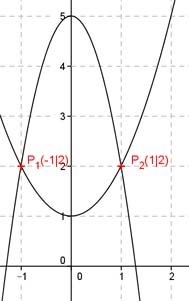

Aufgabe 95 In welchen Punkten schneiden sich die beiden Parabeln? y = -3x2 + 5 und y = x2 + 1 -3x2 + 5 = x2 + 1 |+3x2 5 = 4x2 + 1 |-1 4x2 = 4 |:4 x2 = 1 |√ x1 = -1 x2 = 1 y1 = (-1)2 + 1 = 2 y2 = 12 + 1 = 2 P1(-1|2) , P2(1|2) 